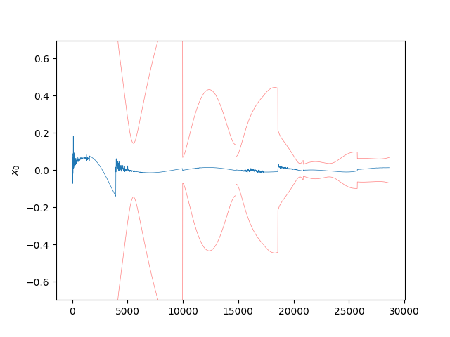
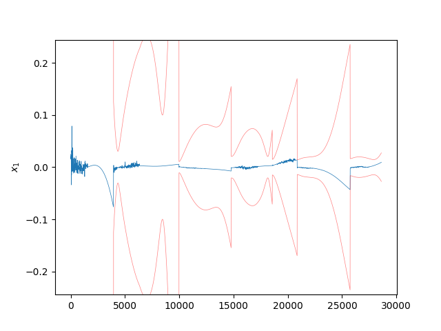
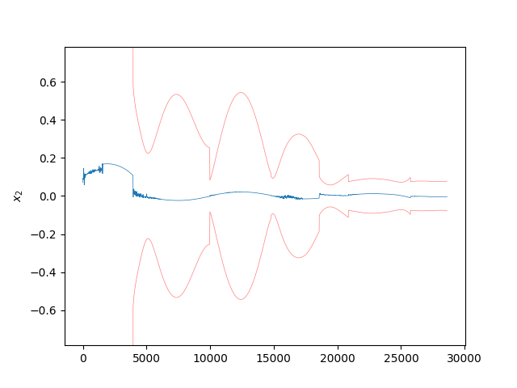
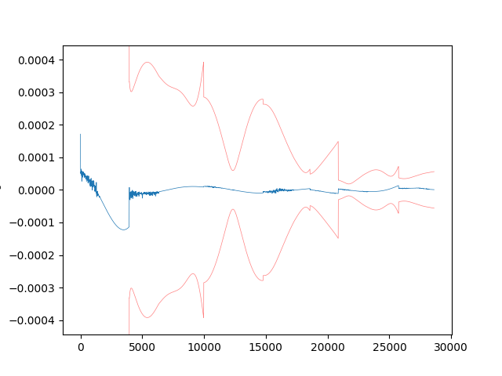
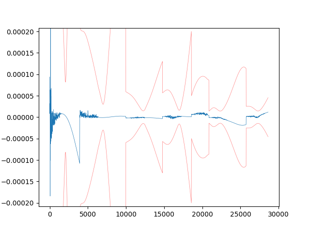
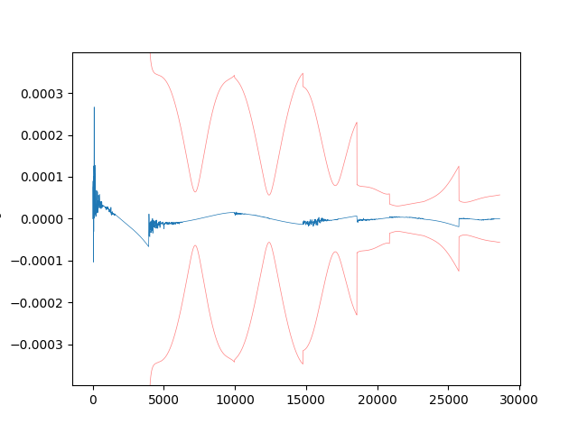
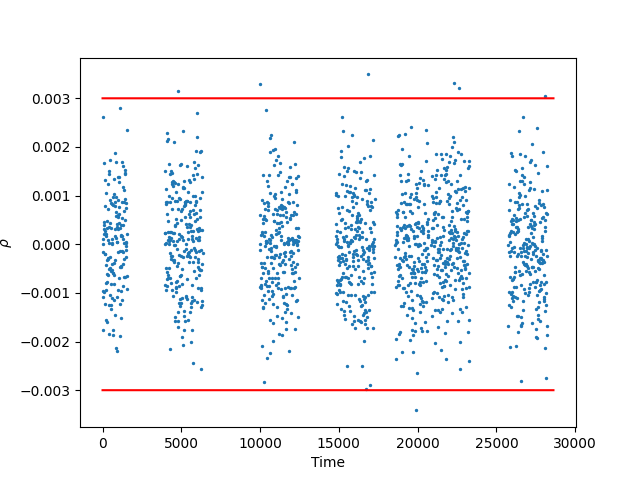
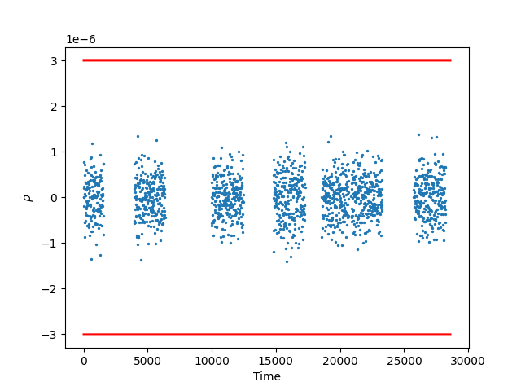

Note
Click here to download the full example code
Square Root Information Filter Example
- 
- 
- 
- 
- 
- 
- 
- 
Progress: 0%| | 0/2862 [00:00<?, ?it/s]
Progress: 0%| | 0/2862 [00:01<?, ?it/s]
Progress: 0%| | 1/2862 [00:04<2:26:26, 3.07s/it]
Progress: 1%| | 15/2862 [00:04<07:15, 6.53it/s]
Progress: 1%|1 | 29/2862 [00:05<03:15, 14.49it/s]
Progress: 2%|1 | 43/2862 [00:05<01:55, 24.32it/s]
Progress: 2%|1 | 57/2862 [00:05<01:18, 35.87it/s]
Progress: 2%|2 | 71/2862 [00:05<00:57, 48.77it/s]
Progress: 3%|2 | 85/2862 [00:05<00:44, 62.40it/s]
Progress: 3%|3 | 99/2862 [00:05<00:36, 76.08it/s]
Progress: 4%|3 | 113/2862 [00:05<00:31, 88.43it/s]
Progress: 4%|4 | 128/2862 [00:05<00:27, 101.10it/s]
Progress: 5%|4 | 143/2862 [00:05<00:24, 111.35it/s]
Progress: 6%|5 | 159/2862 [00:06<00:22, 122.06it/s]
Progress: 6%|6 | 178/2862 [00:06<00:19, 138.67it/s]
Progress: 7%|6 | 197/2862 [00:06<00:17, 150.74it/s]
Progress: 8%|7 | 215/2862 [00:06<00:16, 156.63it/s]
Progress: 8%|8 | 232/2862 [00:06<00:16, 159.53it/s]
Progress: 9%|8 | 249/2862 [00:06<00:16, 161.16it/s]
Progress: 9%|9 | 266/2862 [00:06<00:15, 163.13it/s]
Progress: 10%|9 | 283/2862 [00:06<00:15, 163.95it/s]
Progress: 10%|# | 300/2862 [00:06<00:15, 165.39it/s]
Progress: 11%|#1 | 317/2862 [00:06<00:15, 166.43it/s]
Progress: 12%|#1 | 334/2862 [00:07<00:15, 165.67it/s]
Progress: 12%|#2 | 352/2862 [00:07<00:14, 169.57it/s]
Progress: 13%|#2 | 370/2862 [00:07<00:14, 171.54it/s]
Progress: 14%|#3 | 388/2862 [00:07<00:14, 171.72it/s]
Progress: 14%|#4 | 406/2862 [00:07<00:14, 164.46it/s]
Progress: 15%|#4 | 423/2862 [00:07<00:15, 155.45it/s]
Progress: 15%|#5 | 439/2862 [00:07<00:16, 148.44it/s]
Progress: 16%|#5 | 454/2862 [00:07<00:16, 143.26it/s]
Progress: 16%|#6 | 469/2862 [00:07<00:16, 141.30it/s]
Progress: 17%|#6 | 484/2862 [00:08<00:16, 140.34it/s]
Progress: 17%|#7 | 499/2862 [00:08<00:16, 139.20it/s]
Progress: 18%|#7 | 513/2862 [00:08<00:17, 138.06it/s]
Progress: 18%|#8 | 528/2862 [00:08<00:16, 139.05it/s]
Progress: 19%|#8 | 542/2862 [00:08<00:16, 138.21it/s]
Progress: 19%|#9 | 556/2862 [00:08<00:16, 137.97it/s]
Progress: 20%|#9 | 570/2862 [00:08<00:16, 137.85it/s]
Progress: 20%|## | 584/2862 [00:08<00:16, 138.09it/s]
Progress: 21%|## | 598/2862 [00:08<00:16, 137.97it/s]
Progress: 21%|##1 | 612/2862 [00:08<00:16, 137.62it/s]
Progress: 22%|##1 | 627/2862 [00:09<00:15, 141.03it/s]
Progress: 23%|##2 | 644/2862 [00:09<00:15, 145.42it/s]
Progress: 23%|##3 | 663/2862 [00:09<00:14, 156.93it/s]
Progress: 24%|##3 | 682/2862 [00:09<00:13, 164.04it/s]
Progress: 24%|##4 | 701/2862 [00:09<00:12, 169.42it/s]
Progress: 25%|##5 | 719/2862 [00:09<00:12, 171.14it/s]
Progress: 26%|##5 | 737/2862 [00:09<00:12, 169.96it/s]
Progress: 26%|##6 | 755/2862 [00:09<00:12, 169.95it/s]
Progress: 27%|##6 | 772/2862 [00:09<00:12, 163.82it/s]
Progress: 28%|##7 | 789/2862 [00:10<00:12, 163.19it/s]
Progress: 28%|##8 | 807/2862 [00:10<00:12, 165.79it/s]
Progress: 29%|##8 | 824/2862 [00:10<00:12, 163.88it/s]
Progress: 29%|##9 | 841/2862 [00:10<00:12, 164.03it/s]
Progress: 30%|##9 | 858/2862 [00:10<00:12, 164.76it/s]
Progress: 31%|### | 876/2862 [00:10<00:11, 167.95it/s]
Progress: 31%|###1 | 894/2862 [00:10<00:11, 168.25it/s]
Progress: 32%|###1 | 912/2862 [00:10<00:11, 169.01it/s]
Progress: 32%|###2 | 930/2862 [00:10<00:11, 170.71it/s]
Progress: 33%|###3 | 948/2862 [00:10<00:11, 172.07it/s]
Progress: 34%|###3 | 966/2862 [00:11<00:11, 170.82it/s]
Progress: 34%|###4 | 984/2862 [00:11<00:11, 168.56it/s]
Progress: 35%|###4 | 1001/2862 [00:11<00:11, 166.19it/s]
Progress: 36%|###5 | 1018/2862 [00:11<00:11, 156.58it/s]
Progress: 36%|###6 | 1034/2862 [00:11<00:12, 150.51it/s]
Progress: 37%|###6 | 1050/2862 [00:11<00:12, 145.75it/s]
Progress: 37%|###7 | 1065/2862 [00:11<00:12, 143.13it/s]
Progress: 38%|###7 | 1080/2862 [00:11<00:12, 141.91it/s]
Progress: 38%|###8 | 1095/2862 [00:11<00:12, 142.16it/s]
Progress: 39%|###8 | 1110/2862 [00:12<00:12, 137.21it/s]
Progress: 39%|###9 | 1124/2862 [00:12<00:12, 133.81it/s]
Progress: 40%|###9 | 1138/2862 [00:12<00:13, 131.69it/s]
Progress: 40%|#### | 1152/2862 [00:12<00:13, 131.34it/s]
Progress: 41%|#### | 1166/2862 [00:12<00:12, 131.74it/s]
Progress: 41%|####1 | 1180/2862 [00:12<00:12, 130.99it/s]
Progress: 42%|####1 | 1194/2862 [00:12<00:12, 128.39it/s]
Progress: 42%|####2 | 1207/2862 [00:12<00:13, 127.29it/s]
Progress: 43%|####2 | 1220/2862 [00:12<00:13, 126.11it/s]
Progress: 43%|####3 | 1234/2862 [00:13<00:12, 129.94it/s]
Progress: 44%|####3 | 1249/2862 [00:13<00:12, 133.94it/s]
Progress: 44%|####4 | 1266/2862 [00:13<00:11, 142.40it/s]
Progress: 45%|####4 | 1283/2862 [00:13<00:10, 149.93it/s]
Progress: 45%|####5 | 1300/2862 [00:13<00:10, 155.66it/s]
Progress: 46%|####6 | 1317/2862 [00:13<00:09, 159.50it/s]
Progress: 47%|####6 | 1334/2862 [00:13<00:09, 160.42it/s]
Progress: 47%|####7 | 1351/2862 [00:13<00:09, 161.67it/s]
Progress: 48%|####7 | 1368/2862 [00:13<00:09, 162.67it/s]
Progress: 48%|####8 | 1385/2862 [00:14<00:09, 157.84it/s]
Progress: 49%|####8 | 1401/2862 [00:14<00:09, 153.45it/s]
Progress: 50%|####9 | 1418/2862 [00:14<00:09, 158.09it/s]
Progress: 50%|##### | 1436/2862 [00:14<00:08, 162.48it/s]
Progress: 51%|##### | 1454/2862 [00:14<00:08, 165.60it/s]
Progress: 51%|#####1 | 1471/2862 [00:14<00:08, 164.52it/s]
Progress: 52%|#####1 | 1488/2862 [00:14<00:08, 160.47it/s]
Progress: 53%|#####2 | 1505/2862 [00:14<00:09, 146.59it/s]
Progress: 53%|#####3 | 1520/2862 [00:14<00:09, 143.88it/s]
Progress: 54%|#####3 | 1535/2862 [00:14<00:09, 142.70it/s]
Progress: 54%|#####4 | 1550/2862 [00:15<00:09, 138.06it/s]
Progress: 55%|#####4 | 1564/2862 [00:15<00:09, 137.74it/s]
Progress: 55%|#####5 | 1578/2862 [00:15<00:09, 137.81it/s]
Progress: 56%|#####5 | 1592/2862 [00:15<00:09, 137.51it/s]
Progress: 56%|#####6 | 1607/2862 [00:15<00:09, 138.45it/s]
Progress: 57%|#####6 | 1622/2862 [00:15<00:08, 141.12it/s]
Progress: 57%|#####7 | 1637/2862 [00:15<00:08, 137.74it/s]
Progress: 58%|#####7 | 1652/2862 [00:15<00:08, 140.21it/s]
Progress: 58%|#####8 | 1667/2862 [00:15<00:08, 141.28it/s]
Progress: 59%|#####8 | 1682/2862 [00:16<00:08, 143.47it/s]
Progress: 59%|#####9 | 1697/2862 [00:16<00:08, 143.91it/s]
Progress: 60%|#####9 | 1712/2862 [00:16<00:08, 136.93it/s]
Progress: 60%|###### | 1726/2862 [00:16<00:08, 137.25it/s]
Progress: 61%|###### | 1743/2862 [00:16<00:07, 145.41it/s]
Progress: 61%|######1 | 1760/2862 [00:16<00:07, 151.78it/s]
Progress: 62%|######2 | 1777/2862 [00:16<00:06, 155.97it/s]
Progress: 63%|######2 | 1794/2862 [00:16<00:06, 159.29it/s]
Progress: 63%|######3 | 1810/2862 [00:16<00:06, 155.68it/s]
Progress: 64%|######3 | 1828/2862 [00:16<00:06, 160.77it/s]
Progress: 65%|######4 | 1846/2862 [00:17<00:06, 164.80it/s]
Progress: 65%|######5 | 1863/2862 [00:17<00:06, 161.62it/s]
Progress: 66%|######5 | 1880/2862 [00:17<00:06, 152.73it/s]
Progress: 66%|######6 | 1896/2862 [00:17<00:06, 145.04it/s]
Progress: 67%|######6 | 1911/2862 [00:17<00:06, 143.13it/s]
Progress: 67%|######7 | 1926/2862 [00:17<00:06, 137.49it/s]
Progress: 68%|######7 | 1940/2862 [00:17<00:06, 136.88it/s]
Progress: 68%|######8 | 1954/2862 [00:17<00:06, 135.94it/s]
Progress: 69%|######8 | 1968/2862 [00:18<00:06, 136.25it/s]
Progress: 69%|######9 | 1982/2862 [00:18<00:06, 137.21it/s]
Progress: 70%|######9 | 1996/2862 [00:18<00:06, 137.76it/s]
Progress: 70%|####### | 2010/2862 [00:18<00:06, 137.87it/s]
Progress: 71%|####### | 2024/2862 [00:18<00:06, 137.47it/s]
Progress: 71%|#######1 | 2038/2862 [00:18<00:05, 137.48it/s]
Progress: 72%|#######1 | 2052/2862 [00:18<00:05, 137.30it/s]
Progress: 72%|#######2 | 2066/2862 [00:18<00:06, 131.63it/s]
Progress: 73%|#######2 | 2083/2862 [00:18<00:05, 141.02it/s]
Progress: 73%|#######3 | 2098/2862 [00:18<00:05, 141.81it/s]
Progress: 74%|#######3 | 2113/2862 [00:19<00:05, 141.39it/s]
Progress: 74%|#######4 | 2128/2862 [00:19<00:05, 141.87it/s]
Progress: 75%|#######4 | 2143/2862 [00:19<00:05, 141.54it/s]
Progress: 75%|#######5 | 2158/2862 [00:19<00:04, 141.74it/s]
Progress: 76%|#######5 | 2173/2862 [00:19<00:04, 143.21it/s]
Progress: 76%|#######6 | 2188/2862 [00:19<00:04, 142.14it/s]
Progress: 77%|#######6 | 2203/2862 [00:19<00:04, 138.34it/s]
Progress: 77%|#######7 | 2217/2862 [00:19<00:04, 137.49it/s]
Progress: 78%|#######7 | 2231/2862 [00:19<00:04, 137.19it/s]
Progress: 78%|#######8 | 2245/2862 [00:19<00:04, 137.06it/s]
Progress: 79%|#######8 | 2259/2862 [00:20<00:04, 137.01it/s]
Progress: 79%|#######9 | 2273/2862 [00:20<00:04, 136.24it/s]
Progress: 80%|#######9 | 2287/2862 [00:20<00:04, 136.53it/s]
Progress: 80%|######## | 2301/2862 [00:20<00:04, 137.02it/s]
Progress: 81%|######## | 2315/2862 [00:20<00:04, 135.70it/s]
Progress: 81%|########1 | 2329/2862 [00:20<00:03, 135.43it/s]
Progress: 82%|########1 | 2345/2862 [00:20<00:03, 140.41it/s]
Progress: 83%|########2 | 2362/2862 [00:20<00:03, 147.33it/s]
Progress: 83%|########3 | 2379/2862 [00:20<00:03, 153.53it/s]
Progress: 84%|########3 | 2396/2862 [00:21<00:02, 156.86it/s]
Progress: 84%|########4 | 2413/2862 [00:21<00:02, 159.35it/s]
Progress: 85%|########4 | 2430/2862 [00:21<00:02, 160.99it/s]
Progress: 85%|########5 | 2447/2862 [00:21<00:02, 162.64it/s]
Progress: 86%|########6 | 2465/2862 [00:21<00:02, 164.77it/s]
Progress: 87%|########6 | 2482/2862 [00:21<00:02, 165.80it/s]
Progress: 87%|########7 | 2499/2862 [00:21<00:02, 165.95it/s]
Progress: 88%|########7 | 2516/2862 [00:21<00:02, 164.45it/s]
Progress: 89%|########8 | 2533/2862 [00:21<00:02, 163.54it/s]
Progress: 89%|########9 | 2551/2862 [00:21<00:01, 166.12it/s]
Progress: 90%|########9 | 2569/2862 [00:22<00:01, 168.09it/s]
Progress: 90%|######### | 2586/2862 [00:22<00:01, 163.18it/s]
Progress: 91%|######### | 2603/2862 [00:22<00:01, 157.57it/s]
Progress: 92%|#########1| 2619/2862 [00:22<00:01, 154.07it/s]
Progress: 92%|#########2| 2635/2862 [00:22<00:01, 145.74it/s]
Progress: 93%|#########2| 2650/2862 [00:22<00:01, 145.54it/s]
Progress: 93%|#########3| 2665/2862 [00:22<00:01, 143.47it/s]
Progress: 94%|#########3| 2680/2862 [00:22<00:01, 142.41it/s]
Progress: 94%|#########4| 2695/2862 [00:22<00:01, 143.40it/s]
Progress: 95%|#########4| 2710/2862 [00:23<00:01, 144.50it/s]
Progress: 95%|#########5| 2725/2862 [00:23<00:00, 143.85it/s]
Progress: 96%|#########5| 2740/2862 [00:23<00:00, 143.57it/s]
Progress: 96%|#########6| 2755/2862 [00:23<00:00, 144.53it/s]
Progress: 97%|#########6| 2770/2862 [00:23<00:00, 144.67it/s]
Progress: 97%|#########7| 2785/2862 [00:23<00:00, 143.23it/s]
Progress: 98%|#########7| 2800/2862 [00:23<00:00, 141.86it/s]
Progress: 98%|#########8| 2815/2862 [00:23<00:00, 140.62it/s]
Progress: 99%|#########8| 2831/2862 [00:23<00:00, 144.30it/s]
Progress: 100%|#########9| 2849/2862 [00:23<00:00, 152.92it/s]
Progress: 100%|##########| 2862/2862 [00:24<00:00, 118.91it/s]
Time Elapsed: 24.071291208267212
7 8 9 10 11 12 13 14 15 16 17 18 19 20 21 22 23 24 25 26 27 28 29 30 31 32 33 34 35 36 37 38 39 40 41 42 43 44 45 46 47 48 49 50 51 52 53 54 55 56 57 58 59 60 61 62 63 64 65 66 67 68 69 70 71 72 73 74 75 76 77 78 79 80 81 82 83 84 85 86 87 88 89 90 91 92 93 94 95 96 97 98 99 100 101 | import time
import pickle
import numpy as np
import matplotlib.pyplot as plt
import StatOD
from StatOD.data import get_measurements
from StatOD.dynamics import dynamics, f_J2, get_Gamma_SRIF, get_Q, process_noise
from StatOD.filters import FilterLogger, KalmanFilter, SquareRootInformationFilter
from StatOD.measurements import h_rho_rhod, measurements
from StatOD.visualizations import *
from StatOD.constants import *
def main():
ep = EarthParams()
cart_state = np.array([-3515.4903270335103, 8390.716310243395, 4127.627352553683,
-4.357676322178153, -3.3565791387645487, 3.111892927869902])
t, Y, X_stations_ECI = get_measurements("Data/Measurements/range_rangerate_w_J2_w_noise.data")
# Decrease scenario length
M_end = len(t) // 5
t = t[:M_end]
Y = Y[:M_end]
# Initialize state and filter parameters
dx0 = np.array([0.1, 0.0, 0.0, 1E-4, 0.0, 0.0])
x0 = cart_state + dx0
P_diag = np.array([1, 1, 1, 1E-3, 1E-3, 1E-3])**2
R_diag = np.array([1E-3, 1E-6])**2
P0 = np.diag(P_diag)
R0 = np.diag(R_diag)
t0 = 0.0
# Initialize Process Noise
Q0 = np.eye(3) * 1e-7 ** 2
Q_args = []
Q_fcn = process_noise(x0, Q0, get_Gamma_SRIF, Q_args, use_numba=False)
# Initialize Dynamics and Measurements
f_args = np.array([ep.R, ep.mu, ep.J2])
f, dfdx = dynamics(x0, f_J2, f_args)
f_dict = {
"f": f,
"dfdx": dfdx,
"f_args": f_args,
"Q_fcn": Q_fcn,
"Q": Q0,
"Q_args": Q_args,
}
h_args = X_stations_ECI[0]
h, dhdx = measurements(x0, h_rho_rhod, h_args)
h_dict = {'h': h, 'dhdx': dhdx, 'h_args': h_args}
#########################
# Generate f/h_args_vec #
#########################
f_args_vec = np.full((len(t), len(f_args)), f_args)
h_args_vec = X_stations_ECI
R_vec = np.repeat(np.array([R0]), len(t), axis=0)
##############
# Run Filter #
##############
start_time = time.time()
logger = FilterLogger(len(x0), len(t))
filter = SquareRootInformationFilter(t0, x0, dx0, P0, f_dict, h_dict, logger=logger)
filter.run(t, Y[:,1:], R_vec, f_args_vec, h_args_vec)
print("Time Elapsed: " + str(time.time() - start_time))
##################################
# Gather measurement predictions #
##################################
package_dir = os.path.dirname(StatOD.__file__) + "/../"
with open(package_dir + 'Data/Trajectories/trajectory_J2.data', 'rb') as f:
traj_data = pickle.load(f)
x_truth = traj_data['X'][:M_end]
y_hat_vec = np.zeros((len(t), 2))
for i in range(len(t)):
y_hat_vec[i] = filter.predict_measurement(logger.x_i[i], logger.dx_i_plus[i], h_args_vec[i])
directory = "Plots/" + filter.__class__.__name__ + "/"
y_labels = np.array([r'$\rho$', r'$\dot{\rho}$'])
vis = VisualizationBase(logger, directory, False)
vis.plot_state_errors(x_truth)
vis.plot_residuals(Y[:,1:], y_hat_vec, R_vec, y_labels)
plt.show()
if __name__ == "__main__":
main()
|
Total running time of the script: ( 0 minutes 28.415 seconds)